****************************************************************************************************************
ASSIGNMENT: MAKE SOMETHING BIG
PROJECT : MAKE A 3 STEPS LADDER FOR MY FAB LAB
MACHINE : SHOPBOT PRS CNC
SOFT : RHINOCEROS // V CARVE // SHOPBOT CONTROL SOFTWARE
MATERIAL: 12 MM PLYWOOD
DOWNLOAD:
****************************************************************************************************************
PART 1 : RHINOCEROS DESIGN
I spent a lot of time for develop and drow this project
The long time spent for this exersice, were surely useful for learning Rynoceros
In this exercise I have in fact learned all the principals base commands to model in 2D and subsequently extrude in 3D.
Also I had been learn how to create joints and recess for create 3D wood structures.
I'm happy for this result :-)


PART 2 : V CARVE SET UP
Import the dxf file.
Set the dimention of the plywood pannel--> 2100 mm X 1440 mm X 12 mm
Set the Z origin point --> Top
Set the Datum position --> Down Left
Scale design to the job size --> Yes
OK
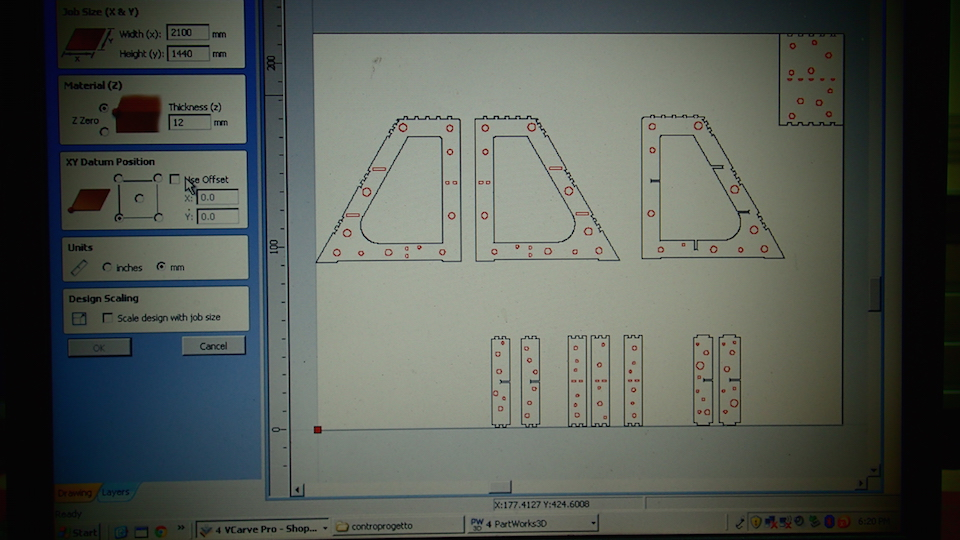
Set the clearance setting respect the dimention of your tool
Rotate the part to find best fit : Yes
Allow part inside other part : if useful
PREVIEW
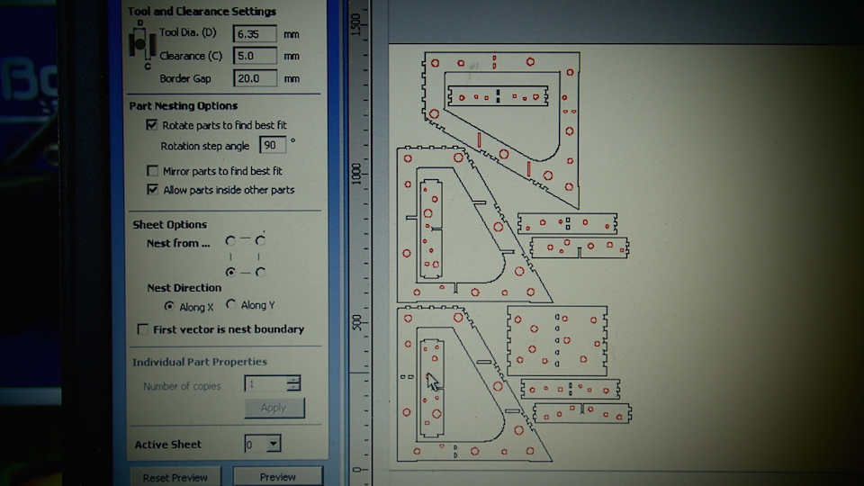
Add tabs : use it chosing the good option base on the dimention and the thikness of the object to cut
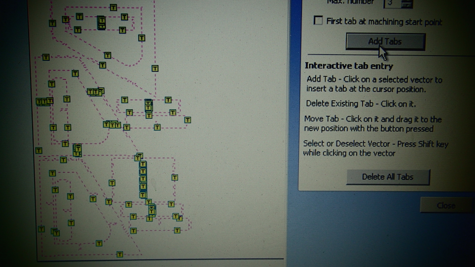
Layers List : I choose 3 differents Layer Colors for each type of cut.
In this section you choose your tool too.
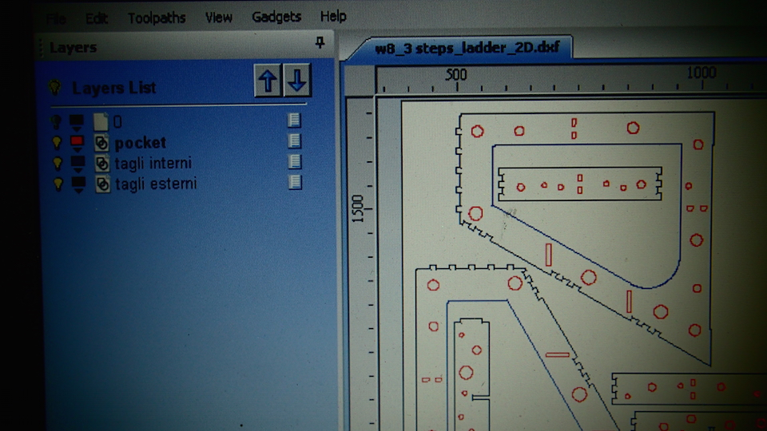
The black one is for the Outside cuts.
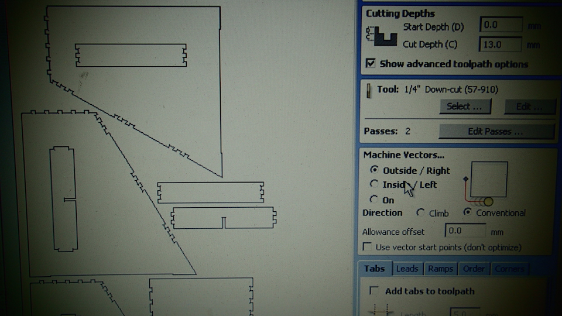
The blue one is for the Inside cuts.
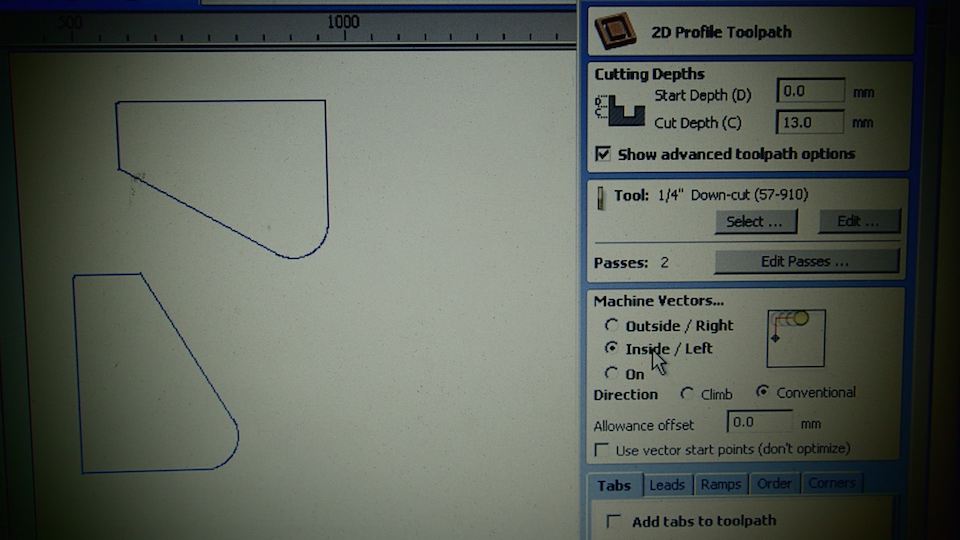
The red one is for the pocket.
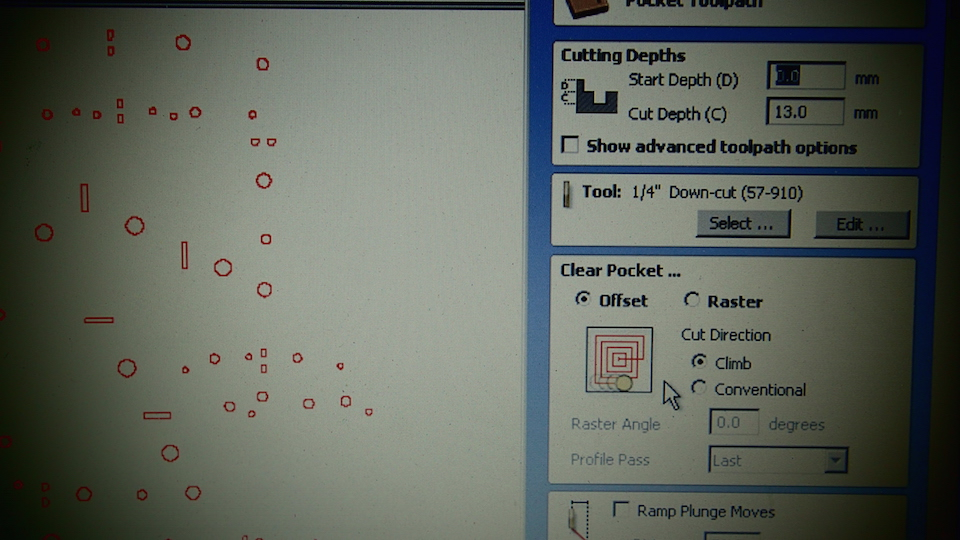
One time you finish all the layer that you have you can export the the differents (3 foor me) Toolphat Files (.spb file)
PART 3 : OPERATE WITH THE MACHINE : SHOPBOT CONTROL SOFTWARE
The first step after swich on the machine is open the Shopbot control software
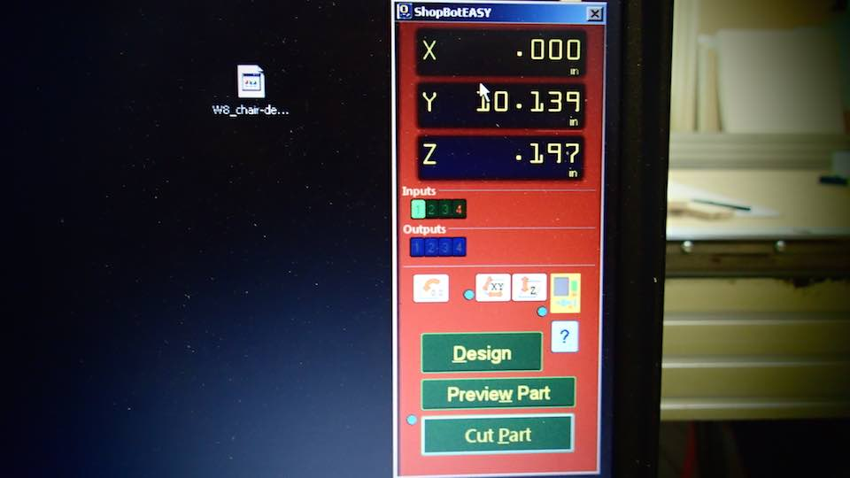
We start to set the Z level
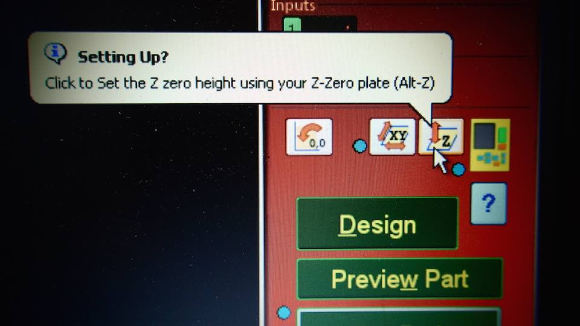
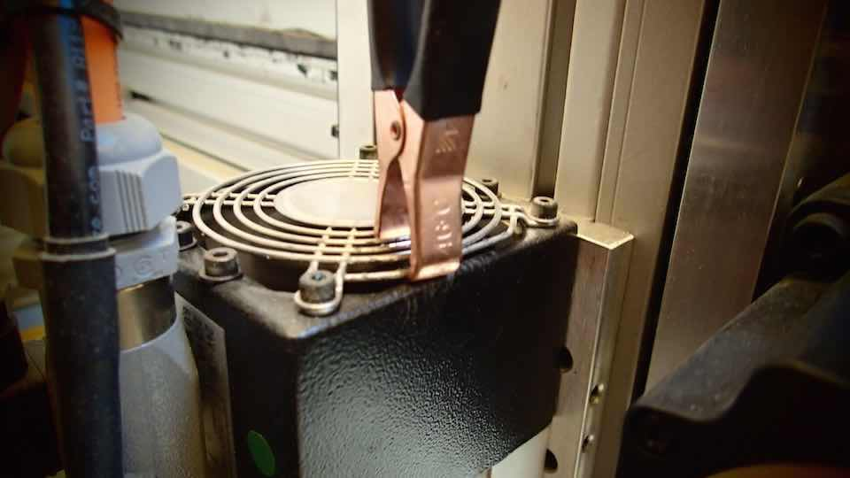
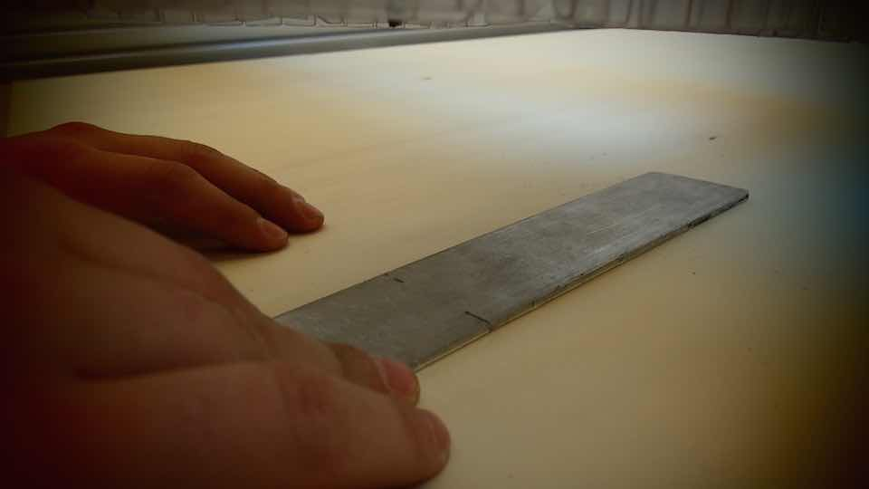
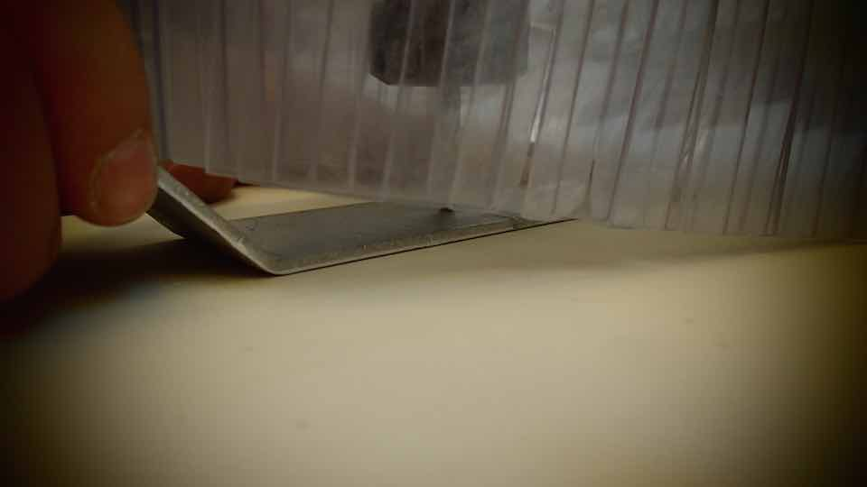
The next step is to set the origin point ( X // Y )
The order of execution of this 2 setting is indifferent.
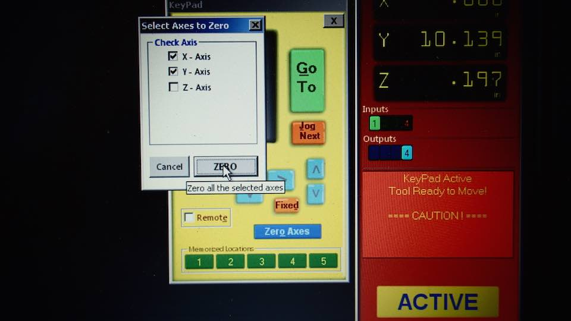
With the bottom " CUT PART " we open a windos that give us the possbility to choose the toolpath that we want to cut for first
Of course we start from POCHET
The second is the INSISIDE CUT.
The therd is the OUTSIDE CUT.
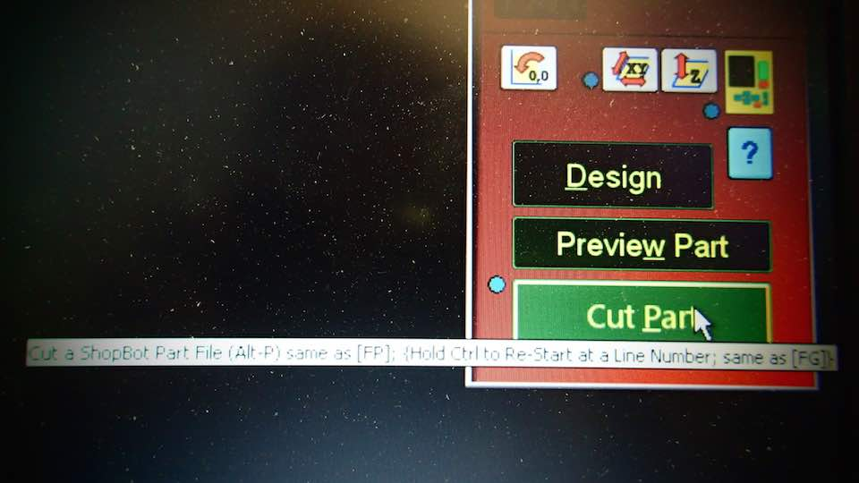